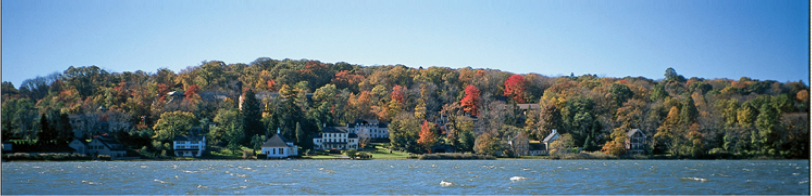

Cold Spring Harbor Laboratory Synthetic Biology Course
Course website here
Bacterial photography in the classroom


Tabor Lab researchers have adapted Jeff Tabor’s pioneering work on bacterial photography into a low-cost, easy-to-use K12 kit enabling students to create their own photographs in the classroom using engineered bacteria.
Bacterial photographs are taken with E. coli which have been genetically engineered to sense red light and respond by producing indigo, the same dye used in blue jeans. When a culture of these E. coli are cast into molten agar and exposed to a red image, they develop a replica of the image, creating a “bacterial photograph” which lasts indefinitely. This highly visual classroom experiment demonstrates to students core biology principles and excites them about cutting edge research and future careers in STEM fields.
Through the generous support of the NSF funded "Bactograph Challenge" we are trialling this experiment in classrooms and workshops across the nation during the 2014-2015 school year. Interested teachers can obtain the materials and curriculum to take bacterial photographs in their classrooms free of charge while our supplies last.
Please follow the links above to request a kit and download the manual, any questions can be addressed to contact@bactograph dot com. A video tutorial can be seen here and interviews of the young scientists who helped develop this experiment can be seen here. We are excited to see the impact this experiment can have on the young scientists of tomorrow!